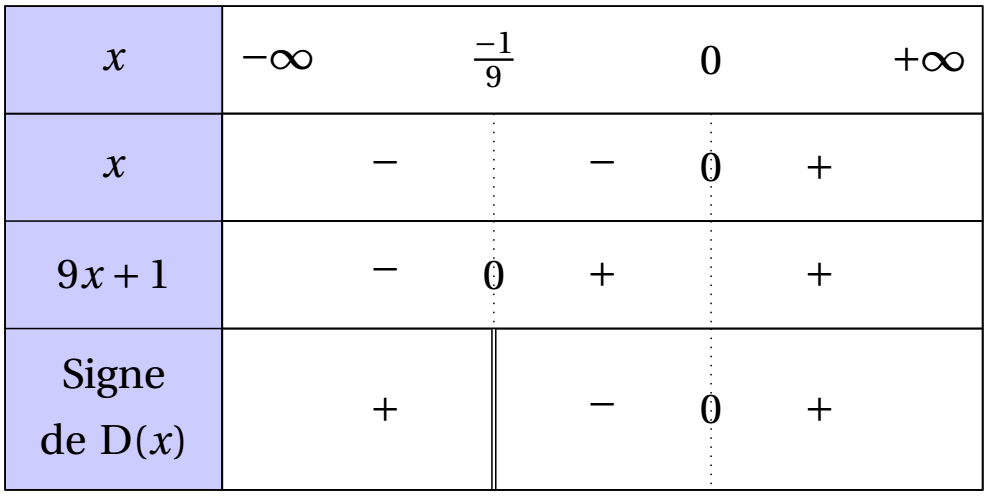
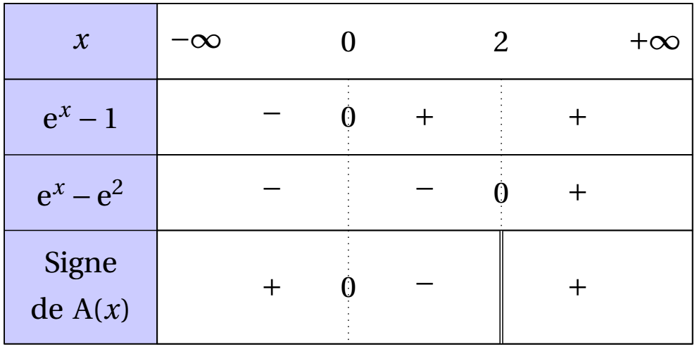

Étudier le signe de chacune des expressions suivantes sur $\mathbb{R}$.
-
$A(x)=8x-7$
-
$B(x)=5-2x$
-
$C(x)=\left(\dfrac{1}{3}-\dfrac{5}{2}x\right)\left(7-\dfrac{1}{2}x\right)$
-
$D(x)=\dfrac{x}{9x+1}$
-
Résoudre, par exemple, l'inéquation $A(x)>0$ et isoler $x$.
-
Résoudre, par exemple, l'inéquation $B(x)>0$ et isoler $x$.
-
Étudier le signe de chacun des facteurs comme aux questions 1. et 2., puis conclure en utilisant la règle des signes.
-
Étudier le signe de chacun des facteurs comme aux questions 1. et 2., puis conclure en utilisant la règle des signes.
-
$A(x)=8x-7$
Soit un réel $x$.
$A(x)>0\Leftrightarrow 8x-7>0$
$A(x)>0\Leftrightarrow 8x>7$
$A(x)>0\Leftrightarrow x>\frac{7}{8}$
On obtient le tableau de signes suivant :
-
$B(x)=5-2x$
Soit un réel $x$.
$B(x)>0\Leftrightarrow 5-2x>0$
$B(x)>0\Leftrightarrow 5>2x$
$B(x)>0\Leftrightarrow \frac{5}{2}>x$
On obtient le tableau de signes suivant :

-
$C(x)=\left(\dfrac{1}{3}-\dfrac{5}{2}x\right)\left(7-\dfrac{1}{2}x\right)$
Étudions le signe de chacun des facteurs séparément.
Soit un réel $x$.
$\frac{1}{3}-\frac{5}{2}x>0\Leftrightarrow \frac{1}{3}>\frac{5}{2}x$
$\frac{1}{3}-\frac{5}{2}x>0\Leftrightarrow \dfrac{\frac{1}{3}}{\frac{5}{2}}>x$
$\frac{1}{3}-\frac{5}{2}x>0\Leftrightarrow \frac{1}{3}\times \frac{2}{5}>x$
$\frac{1}{3}-\frac{5}{2}x>0\Leftrightarrow \frac{2}{15}>x$
Soit un réel $x$.
$7-\dfrac{1}{2}x>0\Leftrightarrow 7>\frac{1}{2}x$
$7-\dfrac{1}{2}x>0\Leftrightarrow \dfrac{7}{\frac{1}{2}}>x$
$7-\dfrac{1}{2}x>0\Leftrightarrow 14>x$
En utilisant la règle du signe d'un produit de deux expressions, on obtient le tableau de signes suivant :

-
$D(x)=\dfrac{x}{9x+1}$
L'expression étant un quotient, il peut exister des "valeurs interdites".
Pour que $D(x)$ existe il faut et il suffit que $9x+1\neq 0$, soit $x\neq \frac{-1}{9}$.
Étudions le signe de chacun des facteurs séparément.
Soit un réel $x$.
$x>0\Leftrightarrow x>0$
Soit un réel $x$.
$9x+1\Leftrightarrow 9x>-1$
$9x+1\Leftrightarrow x>\frac{-1}{9}$
En utilisant la règle du signe d'un quotient de deux expressions, on obtient le tableau de signes suivant :

Étudier le signe de chacune des expressions suivantes sur $\mathbb{R}$.
-
$A(x)=8x^2-7$
-
$B(x)=5+4x-2x^2$
-
$C(x)=5+4x+2x^2$
-
$D(x)=x^4-x^2-1$
-
$E(x)=(9x-3)^2-(1-x)^2$
-
On pourra factoriser ou utiliser le cours en commençant par calculer le discriminant de ces expressions polynomiales du second degré.
-
Utiliser le cours en commençant par calculer le discriminant de ces expressions polynomiales du second degré.
-
Utiliser le cours en commençant par calculer le discriminant de ces expressions polynomiales du second degré.
-
Poser $X=x^2$ et...
-
Factoriser l'expression avant de se reposer la question.
-
$A(x)=8x^2-7$
Méthode 1 : On peut factoriser l'expression.
Pour tout réel $x$, $A(x)=8\left(x^2-\frac{7}{8}\right)=8\left(x-\sqrt{\frac{7}{8}}\right)\left(x+\sqrt{\frac{7}{8}}\right)$
Soit un réel $x$.
$x-\sqrt{\frac{7}{8}}\Leftrightarrow x>\sqrt{\frac{7}{8}}$
et $x+\sqrt{\frac{7}{8}}>0\Leftrightarrow x>-\sqrt{\frac{7}{8}}$
On en déduit le tableau suivant :
Méthode 2 : On utilise les formules de 1ère.
$A(x)$ est un polynôme du second degré de discriminant :
$\Delta=0^2-4\times 8\times (-7)=224$
Comme $\Delta>0$, $A(x)$ admet deux racines réelles distinctes :
$x_1=\dfrac{-0-\sqrt{224}}{2\times 8}=\dfrac{-4\sqrt{14}}{16}=\dfrac{-\sqrt{14}}{4}$
et $x_2=\dfrac{-0+\sqrt{224}}{2\times 8}=\dfrac{4\sqrt{14}}{16}=\dfrac{\sqrt{14}}{4}$
Le coefficient du terme de degré 2 étant strictement positif, on retrouve les mêmes résultats qu'avec la première méthode.
Remarque :
$\sqrt{\dfrac{7}{8}}=\dfrac{\sqrt{7}}{\sqrt{8}}=\dfrac{\sqrt{7}\times \sqrt{8}}{\sqrt{8}\times \sqrt{8}}=\dfrac{\sqrt{56}}{8}=\dfrac{2\sqrt{14}}{8}=\dfrac{\sqrt{14}}{4}$.
Rappel : Le signe d'un polynôme du second degré d'expression $ax^2+bx+c$ est celui de $a$ à l'extérieur de l'intervalle délimité par les racines...s'il en admet.
-
$B(x)=5+4x-2x^2=-2x^2+4x+5$
$B(x)$ est un polynôme du second degré de discriminant :
$\Delta=4^2-4\times (-2)\times 5=56$
Comme $\Delta>0$, $B(x)$ admet deux racines réelles distinctes :
$x_1=\dfrac{-4-\sqrt{56}}{2\times (-2)}=\dfrac{-4-2\sqrt{14}}{-4}=\dfrac{2+\sqrt{14}}{2}$
et $x_2=\dfrac{-4+\sqrt{56}}{2\times (-2)}=\dfrac{-4+2\sqrt{14}}{-4}=\dfrac{2-\sqrt{14}}{2}$
Le coefficient du terme de degré 2 étant strictement négatif, on obtient le tableau de signe suivant :
Rappel : Le signe d'un polynôme du second degré d'expression $ax^2+bx+c$ est celui de $a$ à l'extérieur de l'intervalle délimité par les racines...s'il en admet.
-
$C(x)=5+4x+2x^2=2x^2+4x+5$
$C(x)$ est un polynôme du second degré de discriminant :
$\Delta=4^2-4\times 2\times 5=-24$
Comme $\Delta<0$, $C(x)$ n'admet pas de racine réelle.
Le coefficient du terme de degré 2 étant strictement positif, on obtient :
$C(x)>0$ pour tout réel $x$.>
Rappel : Le signe d'un polynôme du second degré d'expression $ax^2+bx+c$ est celui de $a$ à l'extérieur de l'intervalle délimité par les racines...s'il en admet.
-
$D(x)=x^4-x^2-1$
Posons $X=x^2$. Alors $D(x)=f(X)$ avec $f(X)=X^2-X-1$ et $X\geq 0$.
$f(X)$ est un polynôme du second degré.
Étudions son signe sur $[0;+\infty[$.
Son discriminant est : $\Delta=(-1)^2-4\times 1\times (-1)=5$
Comme $\Delta>0$, $f(X)$ admet deux racines réelles distinctes :
$X_1=\dfrac{-(-1)-\sqrt{5}}{2\times 1}=\dfrac{1-\sqrt{5}}{2}$
et $X_2=\dfrac{-(-1)+\sqrt{5}}{2\times 1}=\dfrac{1+\sqrt{5}}{2}$
Le coefficient du terme de degré 2 de $f(X)$ étant strictement positif, on obtient :
$f(X)>0$ pour $x\in ]-\infty; X_2[\cup ]X_1;+\infty[$.
Ainsi, sur $[0;+\infty[$, on a :
$f(X)>0\Leftrightarrow x\in ]X_1;+\infty[$ et $f(X)<0\Leftrightarrow X\in [0;X_1[$
Or $D(x)>0\Leftrightarrow\begin{cases}X=x^2\\f(X)>0\end{cases} \Leftrightarrow x^2\in ]X_1;+\infty[ \Leftrightarrow x\in ]-\infty;-\sqrt{X_1}[\cup]\sqrt{X_1};+\infty[$
On obtient le tableau suivant :
-
$E(x)=(9x-3)^2-(1-x)^2$
Méthode 1 : On développe et on étudie le signe du polynôme du second degré obtenu.
Pour tout réel $x$,
$E(x)=(9x)^2-2\times 9x\times 3+3^2-\left(1^2-2\times 1\times x+x^2\right)$
$E(x)=81x^2-54x+9-1+2x-x^2$
$E(x)=80x^2-52x+8$
$E(x)$ est un polynôme du second degré de discriminant :
$\Delta=(-52)^2-4\times 80\times 8=144$
Comme $\Delta>0$, $E(x)$ admet deux racines réelles distinctes :
$x_1=\dfrac{-(-52)-\sqrt{144}}{2\times 80}=\dfrac{52-12}{160}=\dfrac{1}{4}$
et $x_2=\dfrac{-(-52)+\sqrt{144}}{2\times 80}=\dfrac{52+12}{160}=\dfrac{2}{5}$
Le coefficient du terme de degré 2 étant strictement positif, on obtient le tableau de signe suivant :
Rappel : Le signe d'un polynôme du second degré d'expression $ax^2+bx+c$ est celui de $a$ à l'extérieur de l'intervalle délimité par les racines...s'il en admet.
Méthode 2 : On factorise.
Pour tout réel $x$,
$E(x)=\left[(9x-3)+(1-x)\right]\times \left[(9x-3)-(1-x)\right]$
$E(x)=(9x-3+1-x)\times (9x-3-1+x)$
$E(x)=(8x-2)(10x-4)$
Soit un réel $x$.
$8x-2>0\Leftrightarrow 8x>2\Leftrightarrow x>\frac{1}{4}$
et $10x-4>0\Leftrightarrow 10x>4\Leftrightarrow x>\frac{2}{5}$
On obtient le tableau suivant :
Étudier le signe de l'expression suivante sur $\mathbb{R}$.
$A(x)=\dfrac{\e^x-1}{\e^x-\e^2}$
On étudie séparément le signe du numérateur et du dénominateur.
Pour chaque expression...il n'y a pas de formule.
On résoud donc directement des inéquations pour déterminer le signe selon la valeur de $x$.
$A(x)=\dfrac{\e^x-1}{\e^x-\e^2}$
Soit un réel $x$.
$\e^x-1>0\Leftrightarrow \e^x>1\Leftrightarrow \e^x>\e^0\Leftrightarrow x>0$ car la fonction exponentielle est strictement croissante sur $\mathbb{R}$,
et $\e^x-\e^2>0\Leftrightarrow \e^x>\e^2\Leftrightarrow x>2$ car la fonction exponentielle est strictement croissante sur $\mathbb{R}$.
On obtient donc le tableau suivant :
